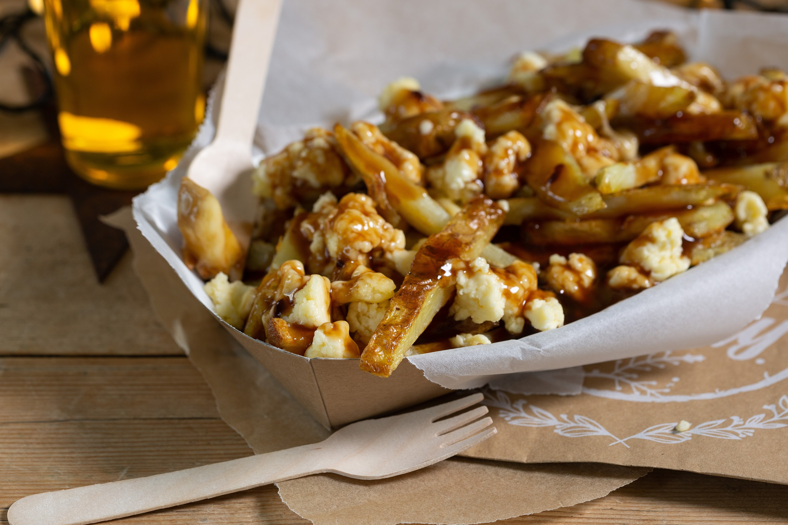

Poutine Gravy
A delectable Quebecois style Poutine gravy. Tried and tested, perfect both in a cold winter night or a warm summer day.
Ingredients
- 1/3 cup AP Flour
- 1/3 cup butter
- 2.5 cups chicken stock (preferably homeamde)
- Dijon mustard or mustard powder
- 1 minced shallot
- 1 minced garlic clove
- 3/4 cup finely shredded chicken breast
- 2 dashes fish sauce
- 1.5 tsp red wine vinegar
- 1 pinch cayenne pepper
Directions:
-
In a dutch oven or pot, add butter with the shallots and garlic, then make a roux with the mixture
-
Add the chicken stock slowly while mixing, until desired consistency is reached
- Add cayenne, fish sauce, red wine vinegar, dijon and the chicken breast
-
let simmer, mixing occasionally, for 30 minutes
-
Serve over curd cheese and crispy fries (FRIES MUST BE CRISPY)
Home